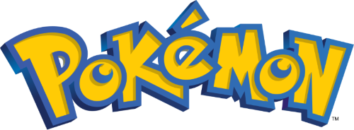

<!doctype html>

<html>

<head>
    <meta charset="utf-8">
    <title>F20GA: Coursework 3</title>
    <script src="libraries/jquery-3.7.1.min.js"></script>
    <script src="https://wgpu-matrix.org/dist/3.x/wgpu-matrix.js"></script>
    <header class="header-home">
        <div>
            
            <!-- Reference : https://en.m.wikipedia.org/wiki/File:International_Pok%C3%A9mon_logo.svg -->
        </div>
    </header>

    <script>
        async function load(filePath) {
            const resp = await fetch(filePath);
            if (!resp.ok) {
                throw new Error(
                    `ObjLoader could not find file at ${filePath}. Please check your path.`
                );
            }
            const file = await resp.text();

            if (file.length === 0) {
                throw new Error(`${filePath} File is empty.`);
            }

            return file;
        }


        async function parse(file) {
            const lines = file?.split("\n");

            // Store what's in the object file here
            const cachedVertices = [];
            const cachedFaces = [];
            const cachedNormals = [];
            const cachedUvs = [];

            // Read out data from file and store into appropriate source buckets

            for (const untrimmedLine of lines) {
                const line = untrimmedLine.trim(); // remove whitespace
                const [startingChar, ...data] = line.split(" ");
                switch (startingChar) {
                    case "v":
                        cachedVertices.push(data.map(parseFloat));
                        break;
                    case "vt":
                        cachedUvs.push(data.map(parseFloat));
                        break;
                    case "vn":
                        cachedNormals.push(data.map(parseFloat));
                        break;
                    case "f":
                        cachedFaces.push(data);
                        break;
                }
            }

            // Use these intermediate arrays to leverage Array API (.push)
            const finalVertices = [];
            const finalNormals = [];
            const finalUvs = [];
            const finalIndices = [];

            // Loop through faces and return the buffers that will be sent to GPU for rendering 

            const cache = {}; // Object to track cached face strings
            let i = 0;
            for (const faces of cachedFaces) {
                for (const faceString of faces) {

                    // If we've already seen this faceString, add to the indices list
                    if (cache[faceString] !== undefined) {
                        finalIndices.push(cache[faceString]);
                        continue;
                    }

                    // Cache the faceString and add it to indices
                    cache[faceString] = i;
                    finalIndices.push(i);

                    // Convert strings to integers and subtract by 1 to zero-index
                    const [vI, uvI, nI] = faceString
                        .split("/")
                        .map((s) => Number(s) - 1);

                    // Push data to respective buffers if indices are valid
                    if (vI > -1) finalVertices.push(...cachedVertices[vI]);
                    if (uvI > -1) finalUvs.push(...cachedUvs[uvI]);
                    if (nI > -1) finalNormals.push(...cachedNormals[nI]);
                    i += 1;
                }
            }


            // Return the buffers as Typed Arrays
            return {
                vertexData: new Float32Array(finalVertices),
                uvs: new Float32Array(finalUvs),
                normalData: new Float32Array(finalNormals),
                indexData: new Uint32Array(finalIndices),
            };
        }
    </script>
    <style>
        html,
        body {
            font-family: 'Arial', sans-serif;
            margin: 0;
            padding: 0;
            display: flex;
            flex-direction: column;
            justify-content: space-between;
            height: 80vh;
            background-color: #e91e1e;
            /* Light background for a clean look */
            color: #333;
            /* Text color for better readability */
        }

        canvas {
            flex-grow: 1;
            display: block;
            width: 100%;
            height: 70%;
            background-color: #ffffff;
            /* Subtle background for the canvas */
        }

        .center {
            display: block;
            margin-left: auto;
            margin-right: auto;
            width: 30%;
            padding-top: 10px;
        }

        #footer {
            display: flex;
            justify-content: space-between;
            align-items: center;
            background-color: #e91e1e;
            padding: 10px 20px;
            /* Reduced padding for a compact design */
            border-top: 1px solid #fff200;
            box-shadow: 0 -2px 5px rgba(0, 0, 0, 0.1);
            /* Add shadow for better separation */
        }

        .nav-button {
            background: #0056b3;
            height: 100px;
            width: 100px;
            border-radius: 50%;
            margin: 15px;
            transition: 0.4s ease;
            color: white; 
            text-align: center;
            line-height: 10px; 
            font-size: 40px;
        }
        .nav-button:hover {
            color: black; 
            background-color: #fbff00;
        }

        #pokemon-name {
            font-weight: bold;
            text-transform: capitalize;
            color: white; 
            text-align: center;
            line-height: 10px; 
            font-size: 30px;
        }

    </style>
</head>

<body>
    <canvas id="canvasElement"></canvas>
    <div id="footer">
        <button class="nav-button" id="prev">◄</button>
        <span id="pokemon-name">Snorlax</span>
        <button class="nav-button" id="next"> ►</button>
    </div>
    <script type="module">
        // Variables
        const { vec2, vec3, vec4, mat4 } = wgpuMatrix; //used to define elements from wgpu-matrix library

        let adapter;
        let device;
        let canvas;
        let context;
        let canvasFormat;
        let vsShaderFile;
        let fsShaderFile;
        let vsModule;
        let fsModule;
        let vertexBuffer;
        let colorBuffer;
        let indexBuffer;
        let pipeline;
        let renderPassDescriptor;
        let then = Date.now();
        let now = 0;
        let indexData;
        let vertexData;
        let uvs;
        let bindGroupLayout;
        let pipelineLayout;
        let bindGroup;
        let uniformBuffer;
        let uniformBufferProjection;
        let angle = 45.0;
        let canvasWidth;
        let canvasHeight;
        let projectionMatrix;
        let canvasElement;
        let modelMatrix;
        let depthStencilTexture;
        let depthStencilState;
        let depthStencilView;
        let depthStencilAttachment;
        let uniformBufferView;
        let viewMatrix;
        let cameraRadius = 0.5; //this zooms this in
        let cameraRadiusAngle = 0.0;
        let cameraPosition = vec3.create(0.0, 0.0, 20.0);
        let cameraFront = vec3.create(0.0, 0.0, -1.0);
        let cameraUp = vec3.create(0.0, 1.0, 0.0);
        let cameraSpeed = 0.5;
        let keys = {};
        let texture;
        let textureBuffer;
        let normalBuffer;
        let rotationAngles = [];
        let uniformBufferNormalMatrix;
        let uniformBufferLight;
        let uniformBufferMaterial;
        let uniformBufferCameraPosition;
        let uniformBufferLightPosition;
        let normalMatrix;

        //Lighting
        let light;                                  // light                      
        let ka = 0.4;             // ambient constant - cheat as no float32!     
        let ia = vec4.create(0.5, 0.5, 0.4, ka);        // ambient              
        let kd = 1.0;             // diffuse constant                            
        let id = vec4.create(0.8, 0.8, 0.6, kd);        // diffuse            
        let ks = 0.8;             // specular constant                            
        let is = vec4.create(0.9, 0.8, 0.6, ks);        // specular            
        let shininess = vec4.create(40.0, 0.0, 0.0, 0.0);  // shininess            // padding for compatability
        let lightPosition = vec4.create(20.0, 0.0, 20.0, 1.0);
        let lightPosition1 = vec4.create(-120.0, 0.0, 20.0, 1.0);

        // Graphics are quite difficult to debug (blank screen) - so adding debugging messages.
        console.log("Starting WebGPU code (" + Date().toLocaleString() + ").");

        async function main() {

            async function setup() {
                console.log("Checking for support, hardware and adapter.");
                if (!navigator.gpu) {
                    throw new Error("WebGPU not supported by your browser.");
                }

                adapter = await navigator.gpu.requestAdapter();
                if (!adapter) {
                    throw new Error("WebGPU Supported but not appropriate hardware.");
                }

                device = await adapter.requestDevice();
                if (!device) {
                    throw new Error("Error supporting WebGPU in your browser");
                }

                console.log("Getting the WebGPU context from our canvas element and configuring it.");
                canvas = document.querySelector('canvas');
                context = canvas.getContext('webgpu');
                canvasFormat = navigator.gpu.getPreferredCanvasFormat();
                context.configure({
                    device,
                    format: canvasFormat,
                });
            }

            function create_pipeline() {
                {
                    // separate function to create the pipeline as it needs to be redone is screen is resized.
                    console.log("Create structures for depth comparison...");
                    depthStencilState = {
                        format: 'depth24plus-stencil8',
                        depthWriteEnabled: true,
                        depthCompare: 'less-equal',
                    };

                    depthStencilTexture = device.createTexture({
                        size: { width: canvasWidth, height: canvasHeight, depthOrArrayLayers: 1 },
                        format: 'depth24plus-stencil8',
                        usage: GPUTextureUsage.RENDER_ATTACHMENT
                    });

                    depthStencilView = depthStencilTexture.createView({
                        format: 'depth24plus-stencil8',
                        dimension: '2d',
                        aspect: 'all',
                    });

                    depthStencilAttachment = {
                        view: depthStencilView,
                        depthClearValue: 1.0,
                        depthLoadOp: 'clear',
                        depthStoreOp: 'store',
                        stencilLoadOp: 'clear',
                        stencilStoreOp: 'discard',
                    };

                    console.log('Creating pipeline...');
                    pipeline = device.createRenderPipeline({
                        label: 'Hardcoded pipeline',
                        layout: pipelineLayout, //changed to pipeline layout from buffer
                        vertex: {
                            module: vsModule,
                            entryPoint: 'vs',
                            buffers: [
                                {
                                    arrayStride: 3 * 4,
                                    attributes: [

                                        { shaderLocation: 0, offset: 0, format: 'float32x3' },
                                    ],
                                },

                                {                       // define colors
                                    arrayStride: 4 * 4, //4x4bytes
                                    attributes: [
                                        { shaderLocation: 1, offset: 0, format: 'float32x4' },
                                    ],
                                },
                                {
                                    //texture coordinates
                                    arrayStride: 2 * 4,
                                    attributes: [
                                        {
                                            shaderLocation: 2, offset: 0, format: 'float32x2'
                                        },
                                    ],
                                },
                                {
                                    //normals
                                    arrayStride: 3 * 4, //3x4bytes
                                    attributes: [
                                        { shaderLocation: 3, offset: 0, format: 'float32x3' },
                                    ],
                                }
                            ],
                        },
                        fragment: {
                            module: fsModule,
                            entryPoint: 'fs',
                            targets: [{
                                format: canvasFormat,
                                blend: {
                                    color: {
                                        operation: 'add',
                                        srcFactor: 'one',
                                        dstFactor: 'one-minus-src-alpha',
                                    },
                                    alpha: {
                                        operation: 'add',
                                        srcFactor: 'one',
                                        dstFactor: 'one-minus-src-alpha',
                                    }
                                },
                            }],
                        },
                        primitive: {
                            topology: 'triangle-list',
                        },
                        cullMode: 'none',
                        depthStencil: depthStencilState,
                    });

                    console.log('Creating Render Pass Descriptor...');
                    renderPassDescriptor = {
                        label: 'Basic canvas render pass',
                        colorAttachments: [
                            {
                                //view: later for rendering
                                clearValue: [1.0, 1.0, 1.0, 1.0], //canvas color
                                loadOp: 'clear',  // clear or store (draw on top)
                                storeOp: 'store', // store or clear (throw away - e.g. multisampling)
                            },],
                        depthStencilAttachment: depthStencilAttachment,
                    };
                }
            };

            /*
                ⠀⠀⠀⠀⠀⠀⠀⠀⠀⠀⠀⠀⠀⠀⠀⣶⣿⣶⣦⣄⣀⣀⣀⣀⣀⣀⣀⣀⣀⣀⣤⣶⣾⣿⣿⣷⠀⠀⠀⠀⠀⠀⠀⠀⠀⠀⠀⠀⠀⠀⠀
                ⠀⠀⠀⠀⠀⠀⠀⠀⠀⠀⠀⠀⠀⠀⠀⣿⣿⣿⣿⣿⠿⠿⠿⣿⣿⣿⣿⠿⠿⠿⢿⣿⣿⣿⣿⣿⠀⠀⠀⠀⠀⠀⠀⠀⠀⠀⠀⠀⠀⠀⠀
                ⠀⠀⠀⠀⠀⢀⡀⣄⠀⠀⠀⠀⠀⠀⠀⣿⣿⠟⠉⠀⢀⣀⠀⠀⠈⠉⠀⠀⣀⣀⠀⠀⠙⢿⣿⣿⠀⠀⠀⠀⠀⠀⠀⠀⠀⠀⠀⠀⠀⠀⠀
                ⠀⠀⠀⣀⣶⣿⣿⣿⣾⣇⠀⠀⠀⠀⢀⣿⠃⠀⠀⠀⠀⢀⣀⡀⠀⠀⠀⣀⡀⠀⠀⠀⠀⠀⠹⣿⠀⠀⠀⠀⠀⠀⠀⠀⠀⠀⠀⠀⠀⠀⠀
                ⠀⠀⠀⢻⣿⣿⣿⣿⣿⣿⣷⣄⠀⠀⣼⡏⠀⠀⠀⣀⣀⣉⠉⠩⠭⠭⠭⠥⠤⢀⣀⣀⠀⠀⠀⢻⡇⠀⠀⠀⠀⠀⠀⠀⠀⠀⠀⠀⠀⠀⠀
                ⠀⠀⠀⣸⣿⣿⣿⣿⣿⣿⣿⣿⣷⣄⣿⠷⠒⠋⠉⠁⠀⠀⠀⠀⠀⠀⠀⠀⠀⠀⠀⠀⠉⠑⠒⠼⣧⠀⠀⠀⠀⠀⠀⠀⠀⠀⠀⠀⠀⠀⠀
                ⠀⠀⠀⢹⣿⣿⣿⣿⣿⣿⣿⣿⡿⠋⠀⠀⠀⠀⠀⠀⠀⠀⠀⠀⠀⠀⠀⠀⠀⠀⠀⠀⠀⠀⠀⠀⠈⠳⣦⣀⠀⠀⠀⠀⠀⠀⠀⠀⠀⠀⠀
                ⠀⠀⠀⢸⣿⣿⣿⣿⣿⣿⡿⠋⠀⠀⠀⠀⠀⠀⠀⠀⠀⠀⠀⠀⠀⠀⠀⠀⠀⠀⠀⠀⠀⠀⠀⠀⠀⠀⠈⢿⣷⣦⣀⠀⠀⠀⠀⠀⠀⠀⠀
                ⠀⠀⠀⠈⣿⣿⣿⣿⣿⡟⠀⠀⠀⠀⠀⠀⠀⠀⠀⠀⠀⠀⠀⠀⠀⠀⠀⠀⠀⠀⠀⠀⠀⠀⠀⠀⠀⠀⠀⢸⣿⣿⣿⣷⣄⠀⠀⠀⠀⠀⠀
                ⠀⠀⠀⠀⢹⣿⣿⣿⣿⠀⠀⠀⠀⠀⠀⠀⠀⠀⠀⠀⠀⠀⠀⠀⠀⠀⠀⠀⠀⠀⠀⠀⠀⠀⠀⠀⠀⠀⠀⢸⣿⣿⣿⣿⣿⣷⣄⠀⠀⠀⠀
                ⠀⠀⠀⠀⠀⣿⣿⣿⣿⡄⠀⠀⠀⠀⠀⠀⠀⠀⠀⠀⠀⠀⠀⠀⠀⠀⠀⠀⠀⠀⠀⠀⠀⠀⠀⠀⠀⠀⣠⣾⣿⣿⣿⣿⣿⣿⣿⣧⡀⠀⠀
                ⠀⠀⠀⠀⢠⣿⣿⣿⣿⣿⣶⣤⣄⣠⣤⣤⣶⣶⣾⣿⣿⣿⣿⣿⣿⣿⣿⣿⣿⣿⣿⣷⣶⣶⣶⣶⣶⣿⣿⣿⣿⣿⣿⣿⣿⣿⣿⣿⣷⠀⠀
                ⠀⠀⠀⠀⢸⣿⣿⣿⣿⣿⣿⣿⣿⣿⣿⣿⣿⣿⣿⣿⣿⣿⣿⣿⣿⣿⣿⣿⣿⣿⣿⣿⣿⣿⣿⣿⣿⣿⣿⣿⣿⣿⣿⣿⣿⣿⣿⣿⣿⣧⠀
                ⠀⠀⣀⠀⢸⡿⠿⣿⡿⠋⠉⠛⠻⢿⣿⣿⣿⣿⣿⣿⣿⣿⣿⣿⣿⣿⣿⣿⣿⣿⣿⣿⣿⣿⣿⣿⠟⠉⠀⠻⠿⠟⠉⢙⣿⣿⣿⣿⣿⣿⡇
                ⠀⠀⢿⣿⣿⠀⠀⠀⠀⠀⠀⠀⠀⠀⠙⣿⣿⣿⣿⣿⣿⣿⣿⣿⣿⣿⣿⣿⣿⣿⣿⣿⣿⣿⡟⠁⠀⠀⠀⠀⠀⠀⠀⠈⠻⠿⢿⡿⣿⠳⠀
                ⠀⠀⡞⠛⠁⠀⠀⠀⠀⠀⠀⠀⠀⠀⠀⢸⣿⣿⣿⣿⣿⣿⣿⣿⣿⣿⣿⣿⣿⣿⣿⣿⣿⡿⠀⠀⠀⠀⠀⠀⠀⠀⠀⠀⠀⠀⢀⣇⡀⠀⠀
                ⢀⣸⣀⡀⠀⠀⠀⠀⣠⣴⣾⣿⣷⣆⠀⢸⣿⣿⣿⣿⣿⣿⣿⣿⣿⣿⣿⣿⣿⣿⣿⣿⣿⡇⠀⣰⣿⣿⣿⣿⣷⣦⠀⠀⠀⠀⢿⣿⠿⠃⠀
                ⠘⢿⡿⠃⠀⠀⠀⣸⣿⣿⣿⣿⣿⡿⢀⣾⣿⣿⣿⣿⣿⣿⣿⣿⣿⣿⣿⣿⣿⣿⣿⣿⣿⣿⡀⢻⣿⣿⣿⣿⣿⣿⠂⠀⠀⠀⡸⠁⠀⠀⠀
                ⠀⠀⠳⣄⠀⠀⠀⠹⣿⣿⣿⡿⠛⣠⠾⠿⠿⣿⣿⣿⣿⣿⣿⣿⣿⣿⣿⣿⣿⣿⡿⠿⠿⠿⠳⣄⠙⠛⠿⠿⠛⠉⠀⠀⣀⠜⠁⠀⠀⠀⠀
                ⠀⠀⠀⠈⠑⠢⠤⠤⠬⠭⠥⠖⠋⠀⠀⠀⠀⠀⠀⠀⠀⠀⠀⠀⠀⠀⠀⠀⠀⠀⠀⠀⠀⠀⠀⠀⠉⠒⠢⠤⠤⠤⠒⠊⠁⠀⠀⠀⠀⠀⠀
    
            */

            async function snorlaxStartup() {
                console.log("Loading Shader files...")
                $.ajax({
                    type: "GET",
                    url: "shaders/pokemonShaders_vs.wgsl",
                    async: false,
                    success: function (response) { vsShaderFile = response; }
                });
                $.ajax({
                    type: "GET",
                    url: "shaders/pokemonShaders_fs.wgsl",
                    async: false,
                    success: function (response) { fsShaderFile = response; }
                });

                vsModule = device.createShaderModule({
                    label: 'Simple VS ',
                    code: vsShaderFile,
                });
                fsModule = device.createShaderModule({
                    label: 'Simple FS ',
                    code: fsShaderFile,
                });

                console.log('Creating layout for Group...');
                //making binding group layout
                bindGroupLayout = device.createBindGroupLayout({
                    entries: [{
                        binding: 0,      // modelMatrix @binding(0)
                        visibility: GPUShaderStage.VERTEX,
                        buffer: {},
                    }, {
                        binding: 1,      // modelMatrixRot @binding(1)
                        visibility: GPUShaderStage.VERTEX,
                        buffer: {},
                    },
                    {
                        binding: 2,      // viewMatrix @binding(2)         : pass view matrix
                        visibility: GPUShaderStage.VERTEX,
                        buffer: {},
                    },
                    {
                        binding: 3, //sampler @binding(3)
                        visibility: GPUShaderStage.FRAGMENT,
                        sampler: {}
                    },
                    {
                        binding: 4, //sampler @binding(4)
                        visibility: GPUShaderStage.FRAGMENT,
                        texture: { sampleType: 'float', viewDimension: '2d', multisampled: false, }
                    },
                    {
                        binding: 5, //light @binding(5)
                        visibility: GPUShaderStage.FRAGMENT,
                        buffer: {
                            type: 'uniform',
                        }
                    },
                    {
                        binding: 6, //normals @binding(6)
                        visibility: GPUShaderStage.VERTEX,
                        buffer: {}
                    },
                    {
                        binding: 7, //camera position @binding(7)
                        visibility: GPUShaderStage.VERTEX,
                        buffer: {}
                    }
                    ]
                });

                console.log('Creating pipeline layout...');
                pipelineLayout = device.createPipelineLayout({
                    bindGroupLayouts: [
                        bindGroupLayout, // @group(0)
                    ]
                });

                const canvas = document.querySelector('canvas');
                if (!canvas) {
                    console.error("Canvas element not found when switching to Snorlax.");
                    return;
                }

                canvasWidth = canvas.width;
                canvasHeight = canvas.height;
                create_pipeline();

                console.log("Gathering vertex, color, index, transformation data...");

                //load Snorlax object
                const file = await load('meshes/snorlax.obj');
                let response = await fetch('textures/snorlaxTexture.png');
                let blob = await response.blob();
                let imageBitmap = await createImageBitmap(blob); //create imagebitmap from the blob

                const parsedObj = await parse(file);
                vertexData = parsedObj.vertexData;
                indexData = parsedObj.indexData;

                console.log('vertices byteLength:', vertexData.byteLength); //need to be / by 4
                if (vertexData.byteLength % 4 !== 0) {
                    const paddedPositions = new Float32Array(Math.ceil(vertexData.length / 4) * 4);
                    paddedPositions.set(vertexData);
                    vertexData = paddedPositions;
                }

                console.log('indicies byteLength:', indexData.byteLength);
                if (indexData.byteLength % 4 !== 0) {
                    const paddedIndices = new Uint32Array(Math.ceil(indexData.length / 2) * 2);
                    paddedIndices.set(indexData);
                    indexData = paddedIndices;
                }

                const textureData = parsedObj.uvs;
                // Check if the byteLength is not a multiple of 4 and pad only if needed
                if (textureData.byteLength % 4 !== 0) {
                    const newLength = (textureData.length + 3) & ~3; // Calculate the next multiple of 4 using bitwise operations
                    const paddedColors = new Float32Array(newLength); // Create a new Float32Array with the required length
                    paddedColors.set(textureData); // Copy the original data into the padded array
                    textureData = paddedColors; // Assign the padded array back to textureData
                }

                const normalData = parsedObj.normalData;
                if (normalData.byteLength % 4 !== 0) {
                    const paddedColors = new Float32Array(Math.ceil(normalData.length / 4) * 4);
                    paddedColors.set(normalData);
                    normalData = paddedColors;
                }

                // load colours
                const vertexCount = vertexData.length / 3; //3 for 3d

                const colorData = new Float32Array(vertexCount * 4);
                //make all vertices red for testing if the texture is correctly working or not
                for (let i = 0; i < vertexCount; i++) {
                    colorData.set([1.0, 0.0, 0.0, 1.0], i * 4);
                }

                //translation
                let modelMatrix = mat4.create();
                mat4.identity(modelMatrix);
                modelMatrix = mat4.translate(modelMatrix, [0, 0, 0]);
                modelMatrix = mat4.rotate(modelMatrix, [0.0, 1.0, 0.0], angle * (Math.PI / 180.0)); //added rotation from example 9
                normalMatrix = (mat4.transpose(mat4.inverse(modelMatrix)));

                //projections
                canvasWidth = canvas.width;
                canvasHeight = canvas.height;
                projectionMatrix = mat4.perspective(60.0 * Math.PI / 180.0, canvasWidth / canvasHeight, 0.1, 1000.0);
                const uniformData1 = projectionMatrix;

                viewMatrix = mat4.lookAt(
                    cameraPosition,
                    vec3.add(cameraPosition, cameraFront),
                    cameraUp);

                 //Lighting //
                light = new Float32Array(2 * 20);
                light.set(ia, 0);
                light.set(id, 4);
                light.set(is, 8);
                light.set(shininess, 15);
                light.set(lightPosition, 16);

                light.set(ia, 0);
                light.set(id, 4);
                light.set(is, 8);
                light.set(shininess, 12);
                light.set(lightPosition1, 10);


                //Buffer //
                console.log("Creating Buffers...");
                //need to change this buffer
                vertexBuffer = device.createBuffer({
                    label: 'vertex buffer object',
                    size: vertexData.byteLength,
                    usage: GPUBufferUsage.VERTEX | GPUBufferUsage.COPY_DST,
                });
                device.queue.writeBuffer(vertexBuffer, 0, vertexData);

                colorBuffer = device.createBuffer({
                    label: 'color attribute object',
                    size: colorData.byteLength,
                    usage: GPUBufferUsage.VERTEX | GPUBufferUsage.COPY_DST,
                });
                device.queue.writeBuffer(colorBuffer, 0, colorData);

                indexBuffer = device.createBuffer({
                    label: 'index buffer',
                    size: indexData.byteLength,
                    usage: GPUBufferUsage.INDEX | GPUBufferUsage.COPY_DST,
                });
                device.queue.writeBuffer(indexBuffer, 0, indexData);

                uniformBuffer = device.createBuffer({
                    label: 'uniform buffer',
                    size: modelMatrix.byteLength,
                    usage: GPUBufferUsage.UNIFORM | GPUBufferUsage.COPY_DST
                });
                device.queue.writeBuffer(uniformBuffer, 0, modelMatrix);

                uniformBufferProjection = device.createBuffer({
                    size: projectionMatrix.byteLength,
                    usage: GPUBufferUsage.UNIFORM | GPUBufferUsage.COPY_DST
                });
                device.queue.writeBuffer(uniformBufferProjection, 0, uniformData1);

                uniformBufferView = device.createBuffer({
                    label: 'uniform buffer',
                    size: viewMatrix.byteLength,
                    usage: GPUBufferUsage.UNIFORM | GPUBufferUsage.COPY_DST
                });
                device.queue.writeBuffer(uniformBufferView, 0, viewMatrix);

                textureBuffer = device.createBuffer({
                    label: 'texture buffer',
                    size: textureData.byteLength,
                    usage: GPUBufferUsage.VERTEX | GPUBufferUsage.COPY_DST,
                });
                device.queue.writeBuffer(textureBuffer, 0, textureData);

                normalBuffer = device.createBuffer({
                    label: 'normal buffer',
                    size: normalData.byteLength,
                    usage: GPUBufferUsage.VERTEX | GPUBufferUsage.COPY_DST,
                });
                device.queue.writeBuffer(normalBuffer, 0, normalData);

                uniformBufferNormalMatrix = device.createBuffer({
                    label: 'uniform buffer normal matrix',
                    size: normalMatrix.byteLength,
                    usage: GPUBufferUsage.UNIFORM | GPUBufferUsage.COPY_DST
                });
                device.queue.writeBuffer(uniformBufferNormalMatrix, 0, normalMatrix);

                // Buffer for light                          
                uniformBufferLight = device.createBuffer({
                    label: 'uniform buffer light',
                    size: light.byteLength,
                    usage: GPUBufferUsage.UNIFORM | GPUBufferUsage.COPY_DST
                });
                device.queue.writeBuffer(uniformBufferLight, 0, light);

                // Buffer for camera position         
                uniformBufferCameraPosition = device.createBuffer({
                    label: 'uniform buffer camera position',
                    size: cameraPosition.byteLength,
                    usage: GPUBufferUsage.UNIFORM | GPUBufferUsage.COPY_DST
                });
                device.queue.writeBuffer(uniformBufferCameraPosition, 0, cameraPosition);

                // Create a texture                         
                texture = device.createTexture({
                    size: [imageBitmap.width, imageBitmap.height],
                    format: 'rgba8unorm',
                    usage: GPUTextureUsage.TEXTURE_BINDING | GPUTextureUsage.COPY_DST | GPUTextureUsage.RENDER_ATTACHMENT
                });
                device.queue.copyExternalImageToTexture(            // Similar to writeBuffer but for textures
                    { source: imageBitmap },
                    { texture: texture },
                    [imageBitmap.width, imageBitmap.height]
                );

                // Sampler                         
                const sampler = device.createSampler({
                    addressModeU: 'clamp-to-edge',
                    addressModeV: 'clamp-to-edge',
                    magFilter: 'linear',
                    minFilter: 'linear',
                });


                // create bind group with the resources
                // note: layout and binding can't be changed without redoing the pipeline, resources can be updated.
                console.log('Creating bind groups...');
                bindGroup = device.createBindGroup({
                    layout: bindGroupLayout,
                    entries: [{
                        binding: 0,
                        resource: { buffer: uniformBuffer }
                    }, {
                        binding: 1,
                        resource: { buffer: uniformBufferProjection }
                    }, {
                        binding: 2,
                        resource: { buffer: uniformBufferView }
                    },
                    {
                        binding: 3,
                        resource: sampler //get from texture sampler
                    },
                    {
                        binding: 4,
                        resource: texture.createView({ dimension: '2d', })
                    },
                    {
                        binding: 5,
                        resource: { buffer: uniformBufferLight }
                    },
                    {
                        binding: 6,
                        resource: { buffer: uniformBufferNormalMatrix }
                    },
                    {
                        binding: 7,
                        resource: { buffer: uniformBufferCameraPosition }
                    }
                    ]
                });

                console.log('Finish all loading at startup...');
            }

            function render() {
                // Calculate FPS
                now = Date.now();
                const deltaTime = now - then;
                let fps = (1000.0 / (deltaTime));
                then = now;
                console.log("Rendering frame (" + Date().toLocaleString() + ") at " + fps.toFixed(2) + " FPS.");

                //now add canvas stuff here
                projectionMatrix = mat4.perspective(60.0 * Math.PI / 180.0, canvasWidth / canvasHeight, 0.1, 1000.0);
                device.queue.writeBuffer(uniformBufferProjection, 0, projectionMatrix);

                //camera stuff
                cameraSpeed = 0.02 * deltaTime;
                for (var key in keys) {
                    if (key == 38) cameraPosition = vec3.add(cameraPosition, vec3.mulScalar(cameraFront, cameraSpeed));
                    if (key == 40) cameraPosition = vec3.subtract(cameraPosition, vec3.mulScalar(cameraFront, cameraSpeed));
                    if (key == 37) cameraPosition = vec3.subtract(cameraPosition, vec3.mulScalar(vec3.normalize(vec3.cross(cameraFront, cameraUp)), cameraSpeed));
                    if (key == 39) cameraPosition = vec3.add(cameraPosition, vec3.mulScalar(vec3.normalize(vec3.cross(cameraFront, cameraUp)), cameraSpeed));
                }

                viewMatrix = mat4.lookAt(
                    cameraPosition,
                    vec3.add(cameraPosition, cameraFront),
                    cameraUp);
                device.queue.writeBuffer(uniformBufferView, 0, viewMatrix);

                // update uniform camera and light position           
                device.queue.writeBuffer(uniformBufferCameraPosition, 0, cameraPosition);

                //object rotation and translation (modelMatrix)
                angle = angle + 1.0; //animation
                modelMatrix = mat4.create();
                mat4.identity(modelMatrix);
                modelMatrix = mat4.scale(modelMatrix, [1.0, 1.0, 1.0]);
                modelMatrix = mat4.translate(modelMatrix, [0.0, -1.0, 15.0]); //move down a bit and move slightly back
                modelMatrix = mat4.rotate(modelMatrix, [0.0, 1.0, 0.0], angle * (Math.PI / 180.0));
                device.queue.writeBuffer(uniformBuffer, 0, modelMatrix);

                // Get the current texture from the canvas context and set it as the texture to render.
                renderPassDescriptor.colorAttachments[0].view = context.getCurrentTexture().createView();

                //----Rendering----//
                // Create a command encoder to start encoding commands
                const encoder = device.createCommandEncoder({ label: 'the encoder' });

                // Create a render pass encoder to encode render commands
                const pass = encoder.beginRenderPass(renderPassDescriptor);
                canvas = document.getElementById("canvas");
                pass.setViewport(0, 0, canvasWidth, canvasHeight, 0, 1);
                pass.setPipeline(pipeline);
                device.queue.writeBuffer(uniformBufferLight, 0, light); //add light


                pass.setVertexBuffer(0, vertexBuffer);      // Set WebGPU using VBO
                pass.setVertexBuffer(1, colorBuffer);       // Set WebGPU using colors
                pass.setVertexBuffer(2, textureBuffer);
                pass.setVertexBuffer(3, normalBuffer);
                pass.setIndexBuffer(indexBuffer, 'uint32'); // Set WebGPU using index data, match this indices
                pass.setBindGroup(0, bindGroup); //set group(0);
                pass.drawIndexed(indexData.length, 5);           // draw indices from object
                pass.end();

                const commandBuffer = encoder.finish();
                device.queue.submit([commandBuffer]);

            }

            // start code
            await setup();
            await snorlaxStartup();  // Start with Snorlax

            // Set the interval to update the rendering
            const UPDATE_INTERVAL = 1000.0 / 30.0;
            setInterval(render, UPDATE_INTERVAL);

            // Check for resize
            const observer = new ResizeObserver(entries => {
                for (const entry of entries) {
                    const canvas = entry.target;
                    const width = entry.contentBoxSize[0].inlineSize;
                    const height = entry.contentBoxSize[0].blockSize;
                    canvas.width = Math.max(1, Math.min(width, device.limits.maxTextureDimension2D));
                    canvas.height = Math.max(1, Math.min(height, device.limits.maxTextureDimension2D));
                    canvasWidth = canvas.width;
                    canvasHeight = canvas.height;

                    create_pipeline();
                }
            });
            observer.observe(canvas);

            // Check for key presses
            $(document).keydown(function (e) {
                keys[e.which] = true;
            });
            $(document).keyup(function (e) {
                delete keys[e.which];
            });

            // Navigation logic
            const prevButton = document.getElementById('prev');
            const nextButton = document.getElementById('next');
            prevButton.addEventListener('click', () => {
                window.location.href = 'Voltorb.html'; // Change this to the actual file for the "previous" Pokémon
            });

            nextButton.addEventListener('click', () => {
                window.location.href = 'Pikachu.html'; // Change this to the actual file for the "next" Pokémon
            });
        }

        main();
    </script>

</body>

</html>